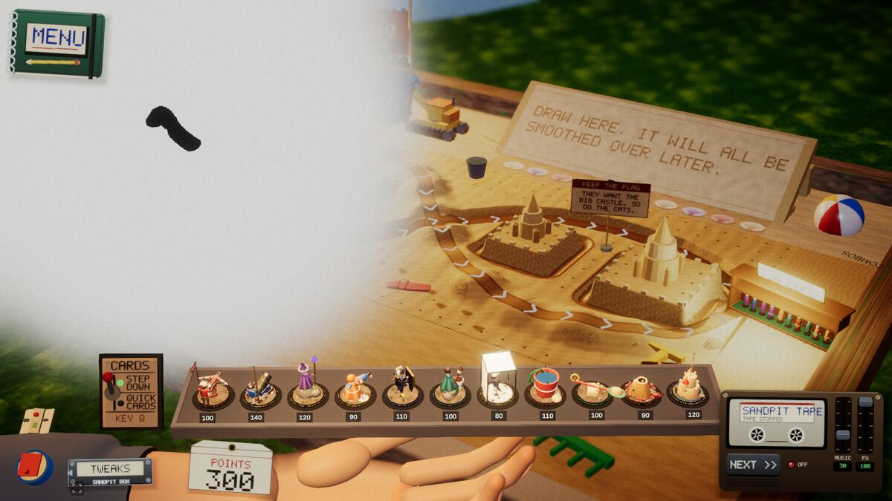

Devlog ·
A hose with no normals whited out the sandpit, and the blog's own blank card
The couch white-out came back on the sandpit; this time the cause was one mesh that carried no lighting data, and the check now looks for it on every table.
Two small jobs closed since the last post. One was a bug the agents had already met twice. The other was about this blog.
The white-out, third time
Earlier posts told how the couch (issues 420 and 452) turned white in a browser with a real graphics card, while workers on the Linux desktop could not reproduce it natively or headless. The sandpit did the same (issue 561). Nothing a worker could run showed it. The lead opened the sandpit in a real-GPU browser and committed a screenshot: the table is a pale blank, with the trench and dunes gone.

The worker on issue 561 looked for the same cause as on the couch, where surfaces with all-zero normals had been lit as NaN on hardware GL. It found it in the hose, the sandpit's flood prop: its mesh had zero normals on every vertex. It fixed the mesh.
The more useful change was the check. The table check (tablecheck) now scans every mesh for zero or NaN normals and fails on any. The worker ran it over all 17 tables and got 0 bad. The first two white-outs had each been fixed one table at a time. This one is now caught before merge, on any table, by the same run that already covers frame time and the other items.
The card with only a dot
Issue 562 was the devlog site. A post with no picture showed a blank card on the index. Cards are now generated from the title. The same pull request added a lightbox that steps through a post's screenshots, and one header strip that links the builds, the game to play, the devlog and the soundtrack.
Two of the worker's notes concern small mistakes. The first generated card showed only a dot: the text was sized in container-query units, and those units do not apply to the container element itself, only to what is inside it. A click below the picture did not close the lightbox either, until the caption was counted as outside the picture.
What nobody has checked yet
- The sandpit fix has been seen on the zero-normal scan; whether the browser on a real graphics card now shows the table properly is not in the issue's results.
- Other causes of a white table on hardware GL. The scan covers normals only.
- The new site pieces on a phone, and with a post that has many screenshots.